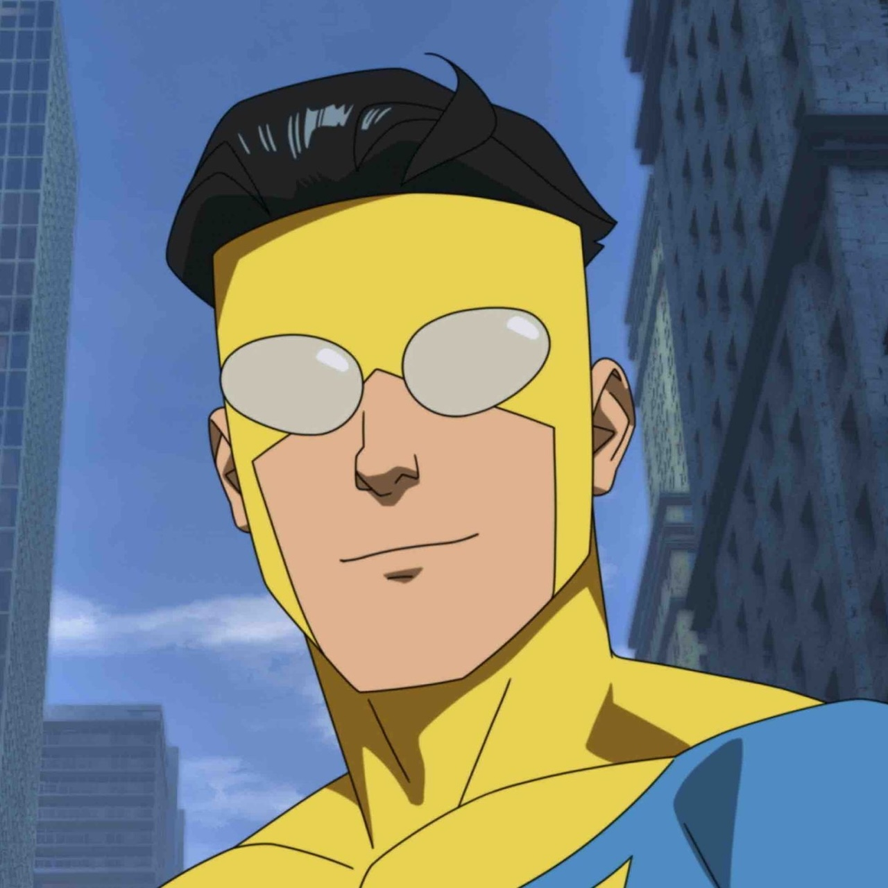
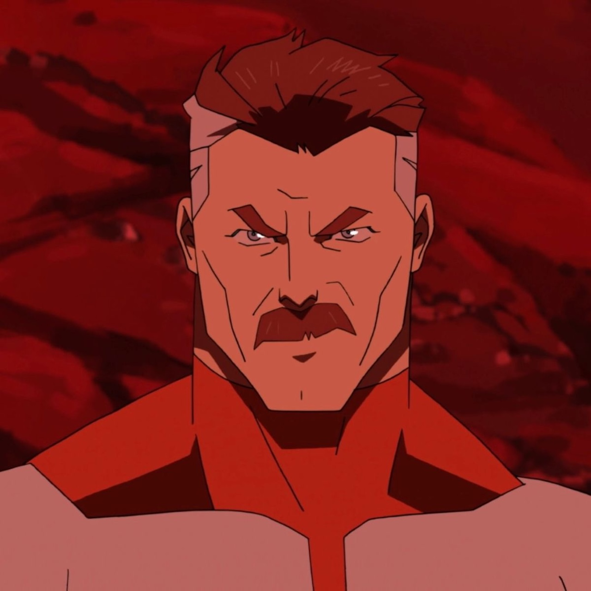
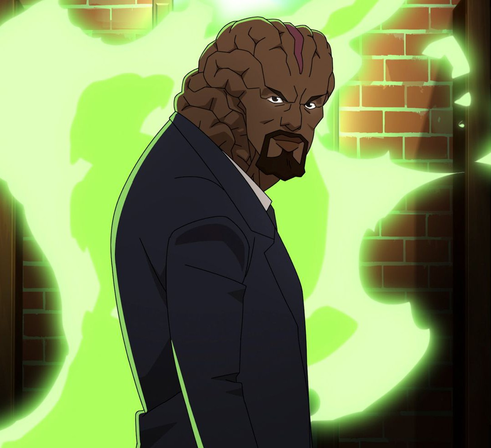
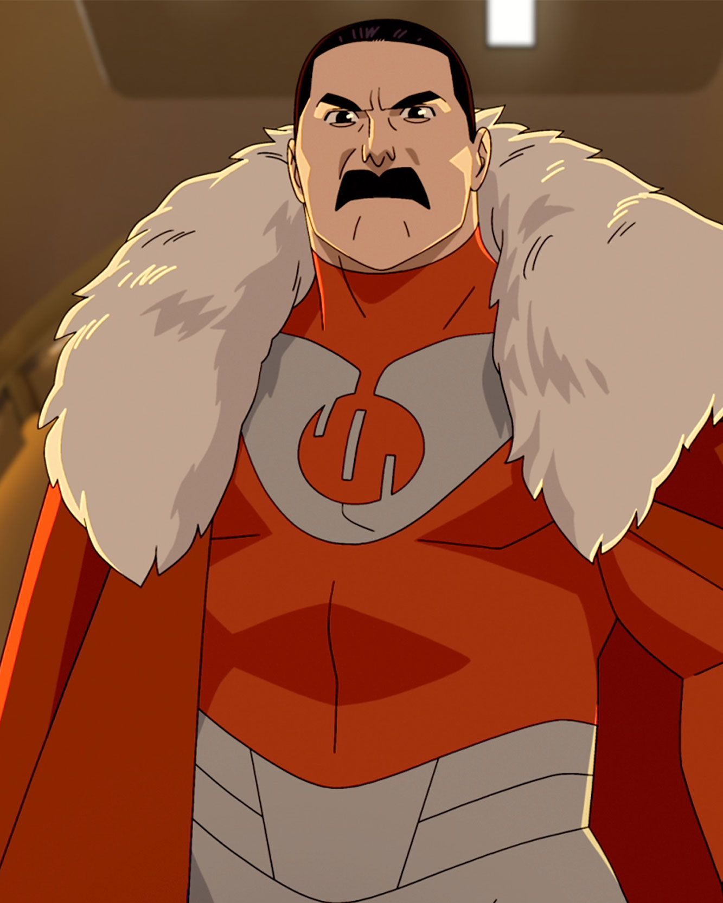

Mark Grayson / Invincible
The main character of the story. Mark is a kind, fair, and stubborn guy who tries to be a hero even when the world turns out to be much harsher than he expected. He often doubts himself, but he always comes back and keeps fighting.
Abilities: super strength, flight, incredible stamina, accelerated healing, high speed, and a nearly invulnerable body.

Nolan Grayson / Omni-Man
Mark's father and one of the most powerful beings in the universe. On the outside, he appears to be the perfect hero and defender of Earth, but inside, he has long been torn between his duty and his feelings for his family.
Abilities: colossal strength, super-speed, flight, immense stamina, longevity, and combat experience gained from thousands of battles.

Samantha Eve Wilkins / Atomic Eve
A smart, independent, and very human superheroine. Unlike many heroes, she strives not only to defeat her enemies but also to truly change the world for the better.
Abilities: manipulation of matter at the atomic level—she can create objects, alter her surroundings, build structures, fly, and generate energy fields.

Allen the Alien
Mark’s powerful ally and one of the most charismatic characters. Despite his immense strength, he remains friendly, calm, and supportive of others.
Abilities: super strength, flight, tremendous stamina, and the ability to become even stronger after sustaining serious injuries.

Angstrom Levy
One of Mark's most dangerous enemies. He is very intelligent, calculating, and obsessed with revenge. He believes he is in the right even when he destroys other people's lives.
Abilities: opening portals between dimensions and accessing the memories of his many alternate versions.

Thragg
The chief warrior and leader of the Vilturmians. Cold, ruthless, and disciplined. He believes that strength is the ultimate law of the universe.
Abilities: Nearly maximum physical strength among the Vilturmians, incredible speed, flight, regeneration, and vast combat experience.